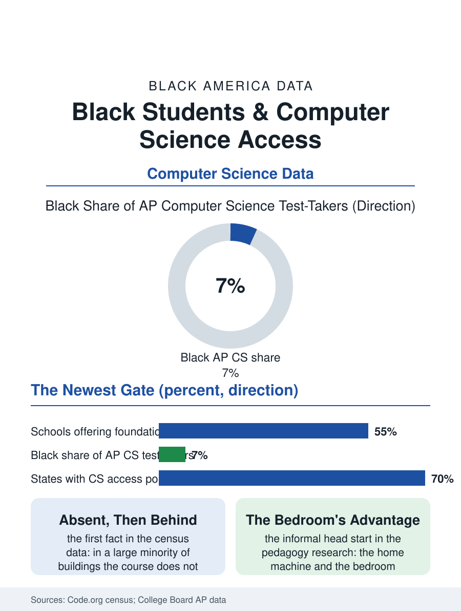

Black Education
The Newest Gate: Black Students and Computer Science
Just over half of schools offer it, seven percent of its AP test-takers are Black, and the newest gate reproduced the oldest map. The CS file.

Computer science is the curriculum's newest gate: the course exists in roughly half of American high schools in the latest counts, the Advanced Placement computer science exams' Black participation runs at a fraction of the enrollment share, and the gap is set, as in the engineering file, first by the building's offering and then by the track's door. This article reads the computer science access file.
The Offering and the Exam
The Code.org census, the file's standard source, counts the schools teaching a foundational computer science course at just over half nationally, with the high-poverty and high-Black-enrollment schools below the line in the pattern of every advanced offering's map, so that the first fact of the Black student's computer science education is, in a large minority of buildings, its absence. The examination data sharpen the picture: the AP Computer Science Principles and A exams' Black test-takers run in the single digits as a share, with the pass rates below the exams' averages, a distribution the field reads as the offering and the preparation compounding. The state's policy file is the current era's: the graduation requirement and the course access mandates moving through the legislatures, whose passage converts the offering from the district's option to the student's entitlement in the states that fund it, the file's direction of travel. The girls' line in the exam data rises from a lower base than the boys' in the pattern of the other technology files, the intersection of the two gates compounding in the AP room's roster, and the programs aimed at the compound, the girls' coding cohorts of the nonprofits and the schools, post the file's most deliberate counter-data. The unplugged lesson, the algorithm taught with the cards and the chalk before the screen is lit, is the pedagogy's emblem in the strong programs, the concept made portable into the buildings whose labs are still a budget cycle away, so that the gate's absence need not be the subject's absence entire in the years the building waits.
The Pipeline's Informal Head Start
The informal file is the access's second system as in the other technology files: the student who arrives with the home machine and the years of the platform's play, the code learned from the video's tutorial in the bedroom's hours, holds a head start the classroom's first term assumes and the unexposed student's confidence pays for, a gap the pedagogy's research names and the strong programs design against with the unplugged and the paired methods whose effect sizes the file records. The teacher file is the system's binding constraint entire: the computer science teacher is the scarcest credential in the building, recruited against the industry's salary in the pattern of the trade instructors', with the emergency certifications and the retrained mathematics teachers staffing the expansion the mandates promise, their preparation being the file's live investment question. The middle school's required rotation is the file's agreed frontier, the exposure placed before the track's door closes, in the pattern of the music file's early instrument.
The Newest Gate, Still a Gate
The computer science file closes on the gate's familiarity, because the newest subject has reproduced the oldest distributions in a single generation of its offering, and the file's value is the speed with which the pattern was measured and named, the census being annual and public, so that the correction's instruments, the mandate, the teacher pipeline's funding, the early exposure in the middle school's required rotation, are aimed with a precision the older gates never enjoyed in their forming. The counts rise each year in the census's own publication. The file's last entry is the first program's run in the school's new lab, the student's own logic lighting the screen in the room the building finally built, the gate at its newest address with the key, for the first cohort, already cut, whose teeth the next census will measure. The cards and the chalk travel where the laptops cannot yet, which is the file's whole equity argument reduced to a teaching kit in a box. A box of cards and a piece of chalk will never be the equal of the lab, and the file does not pretend otherwise; it records only that the subject survived its own absence there.
More in Black Education
Black Educational Attainment: High School Parity, the College Gap
About 89 percent of Black adults hold a high school diploma and one in four holds a bachelor's degree or higher — the attainment ladder, the college completion gap, and the generational trend.
Historically Black Colleges and Universities: Enrollment and Degrees
More than 100 HBCUs enroll roughly 290,000 students and award about one in six Black bachelor's degrees — an outsized share from a small sector. The federal education data.
Black College Enrollment: 2.4 Million Students
About 2.4 million Black students are enrolled in American colleges — nearly two-thirds of them women. The NCES enrollment data by sector, level, and trend.
Source: Code.org State of Computer Science Education census; College Board AP Computer Science participation data.